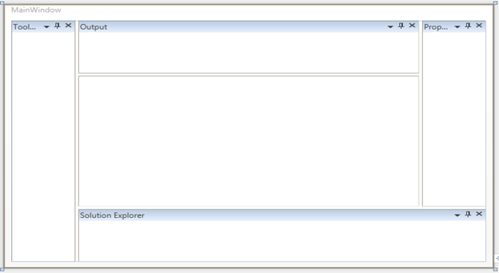

The child elements of the Docking Manager control can be located in the following positions.
1. Left
2. Right
3. Bottom
4. Top
5. Tabbed
The following code example illustrates how to locate the control in different positions.
|
[XAML]
<syncfusion:DockingManager x:Name="dockingManager1" > <ContentControl syncfusion:DockingManager.Header="Tool Box" syncfusion:DockingManager.SideInDockedMode="Left"/> <ContentControl syncfusion:DockingManager.Header="Solution Explorer" syncfusion:DockingManager.SideInDockedMode="Bottom"/> <ContentControl syncfusion:DockingManager.Header="Properties" syncfusion:DockingManager.SideInDockedMode="Right" /> <ContentControl syncfusion:DockingManager.Header="Output" syncfusion:DockingManager.SideInDockedMode="Top" /> </syncfusion:DockingManager>
|
|
[C#] DockingManager.SetSideInDockedMode(ctrl, DockSide.Left); DockingManager.SetSideInDockedMode(ctrl1, DockSide.Right); DockingManager.SetSideInDockedMode(ctrl2, DockSide.Bottom); DockingManager.SetSideInDockedMode(ctrl3, DockSide.Top);
|
Implementing this code will generate the following output.

Figure 306: Docked window in different positions